Chapter 2.1.3 Quassel IRC¶
Quassel IRC is Denios-OS’s default modern, cross-platform, distributed chat client. Quassel aims to bring a pleasurable, comfortable chatting experience to all major platforms (including Linux®, Windows®, and MacOS® as well as Android smartphones), making communication with your peers not only convenient, but also ubiquitously available.
- Features:
Remember Channels, Servers, and queries
SASL authentication
Notifications, including sounds
Aliases
Ignore lists
Usage¶
To chat on IRC you need to connect to a server and join a channel. This can be done with the join button or by typing “/join [channel]”. To send a query or private message directly to someone type “/query” username or right click on the user list and select . After starting a query you can get back to this conversation by viewing the user with a human shaped icon on the left side pane to continue the conversation later. If you wish to view older messages just scroll up with the mousewheel or the scrollbar to the right. Scroll down to view newer messages.
To see all the nicknames of someone in a channel are located in a sidebar labeled Nicks. The lists of all channels you are in is labeled All chats. To switch between different channels left click on the channel name.
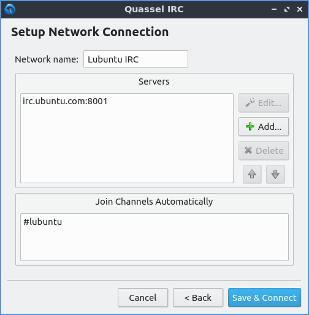To add the Denios-OS IRC chat network click . To add a new network click the +Add button. To connect to a common public network Use preset dropdown, select Denios-OS IRC or any other server you want to join and then press OK. To change a name of an IRC network press the Rename button type the new name in and press OK.
To join a channel simple type /join 1 (where 1 is the channel name), right click the network and select or use the Join button. To leave a channel right click on the channel name on the right hand side and select from the context menu or type /part channelname. If you want to join the channel again after leaving it right click on the channel and select . To have your chat be hidden until you rejoin it again right click on the channel and select . To hide the chat forever right click on the channel and select .
To hide all people joining or leaving a chat right click on the channel list . To only hide people joining right click on the list of channel list . To hide people parting the channel right click on the channel list . To hide people quitting the channel right click on the channel list . To hide people changing their nickname . To hide when someone changes the topic of a channel . To hide people changing the mode of a channel right click on the list of channels . To hide when Quassel tells you it is tomorrow right click on the list of channels . However while hiding events may result in less busy traffic it can leave you trying to communicate with people no longer on IRC. To view these events again simply uncheck the checkbox for that event.
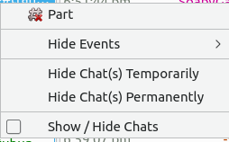If you want to disconnect from a particular server if you have connected to it right click on the server name and select . If you are disconnected from a server and want to connect to it right click on it and select . To collapse a servers list of channels you can left click on the arrow next to the server name and click it again to uncollapse the list of channels. To change your settings for a server right click on a server name and select .
To toggle showing checkboxes in front of each chat right click on a server or channel and check the checkbox for to bring a giant list of checkboxes. To hide a chat this way uncheck the checkbox in front of that channel or query. To go back and actually hide some chats right click on the channel or server and unchceck .
To state you are taking an action in IRC you can type /me at the start of you typing to have say *nick does something. To change your nickname on IRC type /nick newname to change you name to newname.
To leave all servers and disconnect press the Disconnect button in the top toolbar. If you have multiple servers configured to disconnect from one press the downward pointed arrow and select the server you want to disconnect from. To connect to the servers again press the Connect button. To connect to a specific server press the downward pointing arrow and select the server you want to connect to.
To switch between multiple channels left click on the channels on the left hand side. If a different channel has has new text in it the channel name will appear in blue. If a channel has a green name a user has joined of left. You also can switch between multiple channels with Alt + up arrow to move up or Alt + Down arrow to move down. To go to the next active chat press Alt + Right or to go to the previous active chat Alt + Left. To jump to a hot chat press Meta +A.
In Quassel if someone says your name you are said to be highlighted which in Quassel will make a sound and in a goldenrod color over the line of text with your name on it. The notification will also be shown on your desktop if you are in another window. Also at midnight Quassel will tell you when midnight and the date of the new day.
If you want to enable automatically spell checking your input right click on the input bar and select . To change your language for spellcheck right click in the input bar and select . If you make a mistake when typing in your input you can press Control+Z or right click on the input bar and select . To redo typing and action press Control+Shift+Z or . To clear the text you input right click the input bar and select .
To zoom in to get to your chat more right click and select . To zoom out in Quassel press Control+- or right click and select . To go back to your original size right click Quassel and select .
To use SASL authentication to autologin to an account no matter which nickname you want to use to bring up a network configuration dialog. Click on the autoidentify tab and press the checkbox for Use SASL Authentication. Enter your username on the IRC network in the Account text field. Input your password into the Password field so that you know how to auto identify. You can also autoidentify without using SASL by clicking the Top checkbox. Nickserv is a sensible default for what the services is but it may be different on different servers and put your password in where you autoidentify.
If you want to have settings for automatic reconnecting and select the Connection tab. The checkbox Automatic Reconnect will automatically rejoin chats if you get disconnected. The Wait field shows how long to between the retries between each try. The checkbox for Rejoin all channels after reconnect lets you rejoin all of your channels without having to manual rejoin each. The Number of retries is how many times to retry to connect before stopping. To have an unlimited number of retries click the Unlimited number of checkboxes.
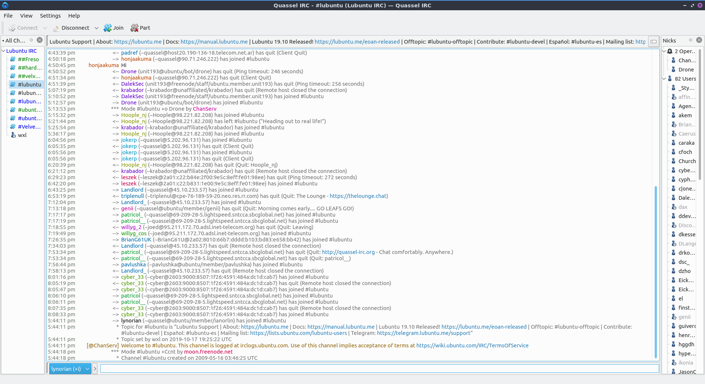To ignore a really annoying user you can on the nicks bar on the right hand side right click on the user and then select how to ignore that user. If you realize you want to talk to them again Right click the same username and uncheck the checkbox for the ignore rule you created.
To type a message to an entire channel type into the bar at the bottom and press enter. To complete typing someone’s nickname press the Tab key to complete their name. To paste text into the channel such as a link press Control + V or right click . If you see a hyperlink in chat you can left click on the link to open in your webbrowser or you can copy the link by right clicking on it and .
To close the list of nicknames or channels press the X button or . To reopen the view of nicks . To close the list of all chats press the X button to close a list of all channel and private messages you are in. To reopen it press the .
To make your chat full screen or Control + Shift +F. Press the keyboard shortcut or use the menu again to get out of fullscreen. If you want to quit Quassel press Control+Q or right click on the system tray and select .
Customizing¶
To change your preferences for Quassel press F7 or . To change how Quassel appears use the Interface tab. To choose a language for your chat change the Language drop down menu. To change the client style for the widget of Quassel choose a widget style from the Widget style drop down menu. To change which icon theme you use for Quassel use the Fallback icon theme drop down menu and to have it replace your system icon theme press the Override system theme.To toggle showing tray icon check/uncheck the Show system tray icon checkbox. If you want to be able to close the Quassel window and still have Quassel running in the system tray to bring it back up check the Hide to tray on close button.
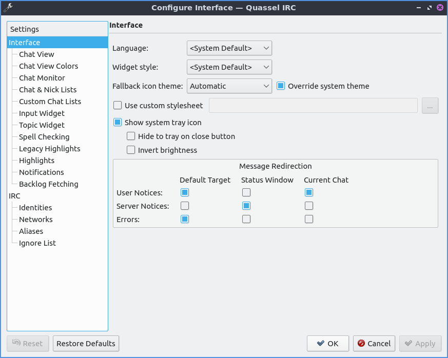The Chat View tab has settings for colors timestamps and hyperlinks. To change how the time before each message appear check the Custom timestamp format checkbox and type hh for hours mm for both minutes or ss for seconds. To toggle showing brackets around everyone’s nicknames check the Show brackets around sender names. To chose a custom chat window font press the Custom chat window font checkbox and then press the Choose button to choose a new font. To toggle previews of hyperlinks in chat check/uncheck the Show previews of webpages on URL hover. To toggle a red horizontal line when switch chats to show where you left off check/uncheck the Set marker line automatically when switching chats. To toggle a red horizontal line to show where left off when you switch windows check/uncheck the Set marker line automatically when Quassel loses focus checkbox.
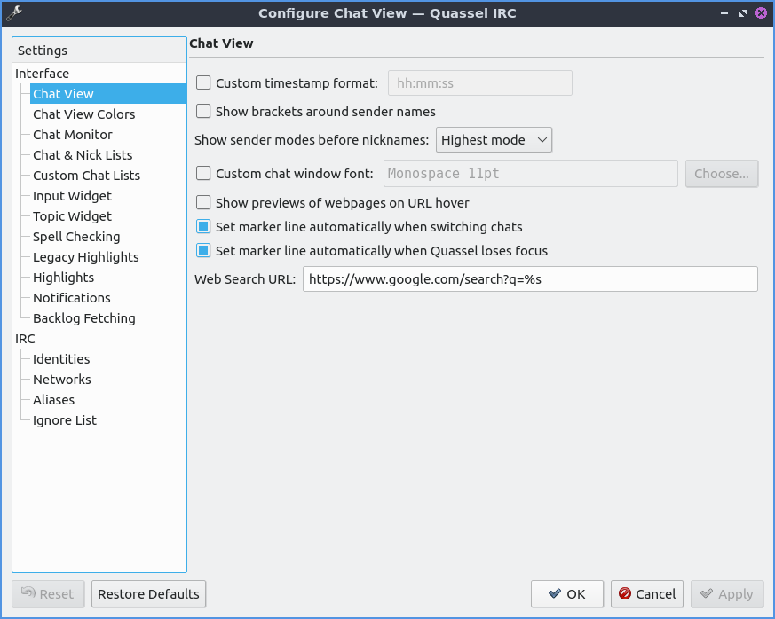To change your colors of chat use the Chat View Colors tab. To toggle if you want colored text press/unpress the Allow colored text checkbox. To change the Colors of your user interface on Quassel check the Custom Colors checkbox. Then there are many buttons for each different kind of message which you can press the button that all bring up the specific color for that kind of message. To change the colors of nicknames for different people sending messages check the Use Sender Coloring checkbox.
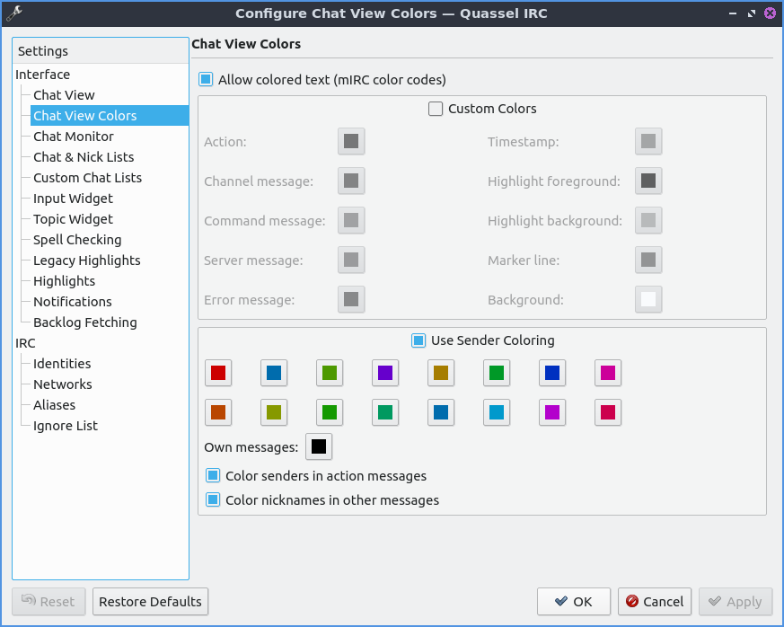The Chat & Nick Lists has settings for the lists of nickname lists. The Custom font checkbox lets you chose a custom font on the lists of nicks and the Choose button lets you choose the font you want. The Display topic in tooltip shows the channel topic in a tooltip if you move the mouse over it. If you want to be able to switch channels from the mouse wheel check the Mouse wheel changes selected chat checkbox. The checkbox Use Custom Colors enables the settings for different colors for the different channels. The buttons next to Standard, Inactive, Highlight, or Other activity all change what color the channel appears when you are in a list of channels. The Custom Nick List colors checkbox lets you change the color of nicks in the list. The Online button changes the color of nicks of online users. The Away button changes the color of nicks of Away users.
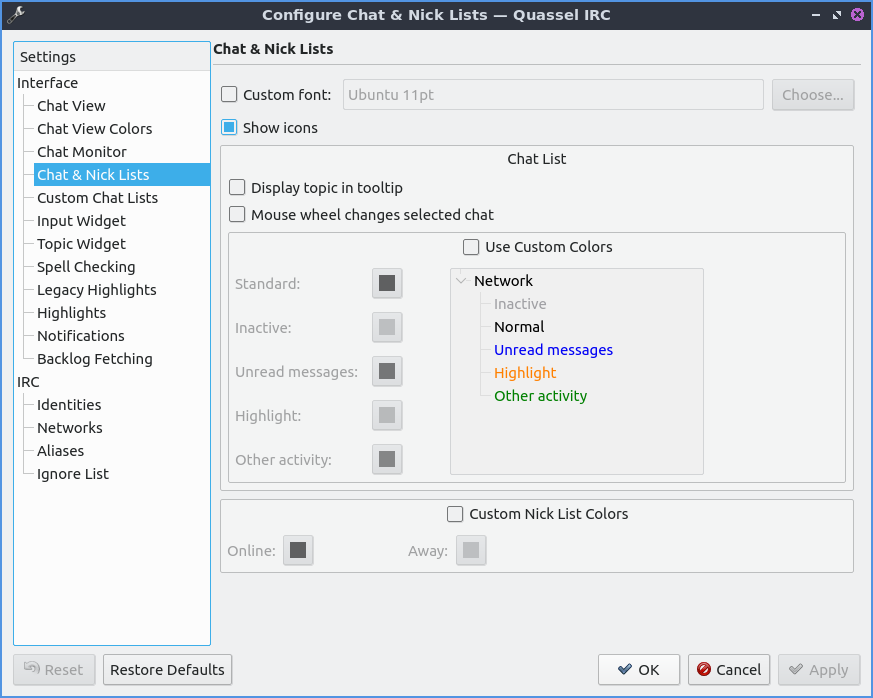The Input widget has settings for what you tab to type into channels or private messages. The Custom Font checkbox has a thing to activate your own custom font for just input and press the Choose button to the font. To have per chat history check the Enable per chat History checkbox. The checkbox Show nick selector puts a widget in the lower left corner of the window to select different nicks. The checkbox Show style buttons shows buttons that style your text hidden in an arrow under an arrow. To enable line wrapping when you type a long line in the input box check the Line Wrapping checkbox. To enable multiple line editing if you have a really long thing you want to type into the IRC channel check the Multi-Line Editing checkbox. To edit the largest number of lines shown change the Show at most X lines field. To have a scrollbar on inputting text if long enough check the Enable scrollbars checkbox. After tab completing someone’s nick if you want something after it in the Completion suffix field. To add a space after tab completing someone’s nick automatically check the Add space after nick when completing mid-sentence checkbox.
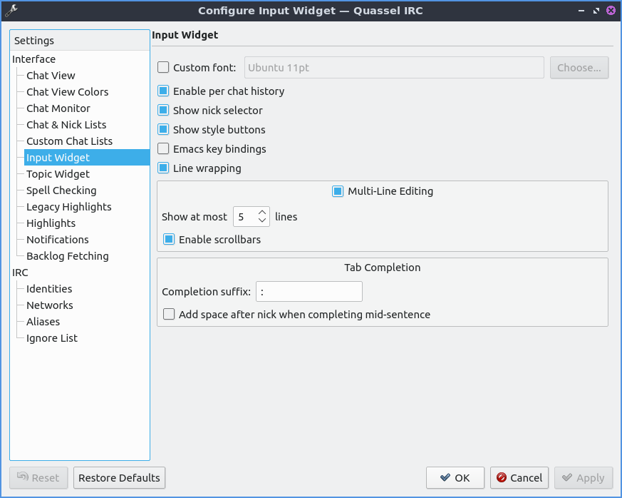To change how Quassel displays the topic of each channel use the Topic Widget tab. To use a custom font for your topic check the Custom font checkbox and to choose a different font press the Choose button. To choose to resize to fit the topic check the Resize dynamically to fit contents. To only do this when you hove over the topic check the On hover only checkbox.
To view settings for spellcheck use the Spell Checking tab. To change the default language for you spell check use the Default language drop down menu. To toggle autodetecting language check the Enable autodetection of language checkbox. To have Automatic check spelling by default check the Automatic spell checking enabled by default checkbox. To have spell check not spellcheck on words starting with capital letters check the Skip all uppercase words checkbox. To not spellcheck two words right next to each other check the Skip run-together words checkbox. To add words to be the dictionary type in the Ignored Words field and then press the Add button. To remove a word from your dictionary left click on it and press the Remove button.
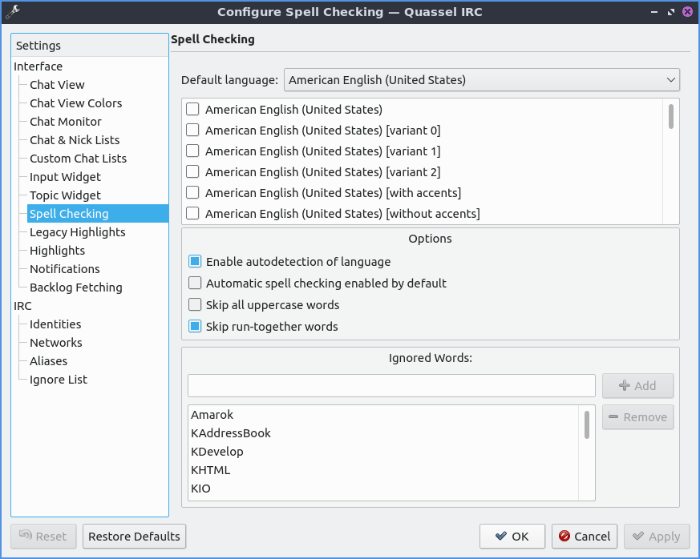To have additional settings on highlights like when someone says your name in a channel and it appears in a different color use the Highlights tab. To add other words or names to highlight you can press the Add button. To change what you want a name or word to be highlighted double click on the Name column. To toggle enabling being highlighted by the name check or uncheck the checkbox in the Enabled column. To make being highlighted case sensitive check the checkbox in the checkbox in the CS column. To use a regular expression for the rule to highlight check the checkbox in the RegEx column. To remove this highlight rule press the Remove button.
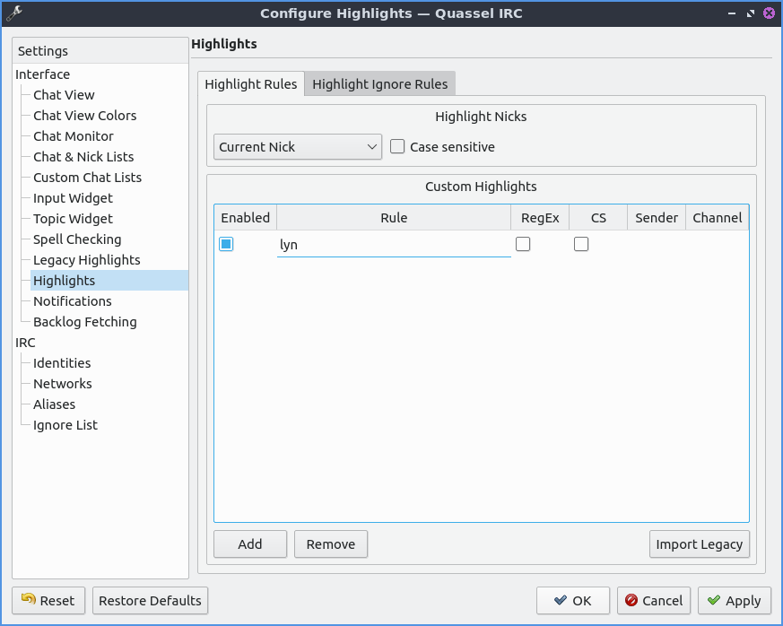To change your settings Quassel getting and displaying backlogs can be set from Backlog Fetching tab. To change modes of backlog fetching to unread messages or a fixed number per chat use the Backlog request method drop down menu. If you choose a fixed amount you can change the Initial backlog amount to change how many lines you get. If you change the amount unread messages choose the Limit to get that many unread messages and then the Additional Messages will be shown for context.
To change your settings on your notifications . You can also get to this from the Notifications tab from the notifications tab. To select which event to change your settings left click on Private message when focused, Highlight, Highlight When Focused, or Private Message. If you do not know what highlight is it is when someone mentions your name in a channel. The checkbox Play a Sound allows you to to toggle playing a sound in the context. The checkbox Show message in a popup creates a popup notification when someone else mentions you. The Log to file puts the message in a file. The Mark taskbar entry makes the taskbar entry appear highlighted. To change what to do with the tray icon when you are highlighted by Quassel check the Alert tray icon and then select what you want to happen to the tray icon.
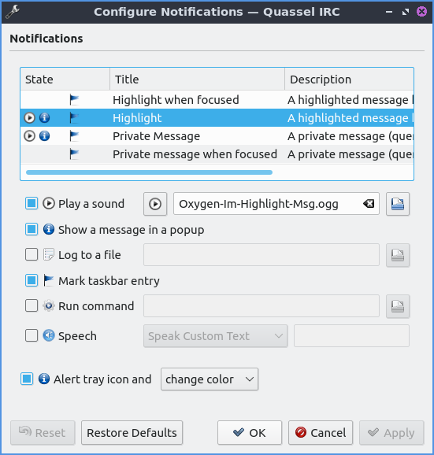To change your shortcut . To see what shortcut does look at the Action column in the table. To see what keyboard shortcut to press see the Shortcut column. To set a second keyboard shortcut to do something use the Alternate column. To switch to a custom keyboard shortcut left click on the action in the action column press the Custom and then press the button to the right and input your keyboard shortcut. To restore your keyboard shortcuts to the defaults press the Defaults bottom at the bottom. To not make your changes for keyboard shortcuts press the Cancel button. To apply your changes to keyboard shortcuts and close the window press the OK button.
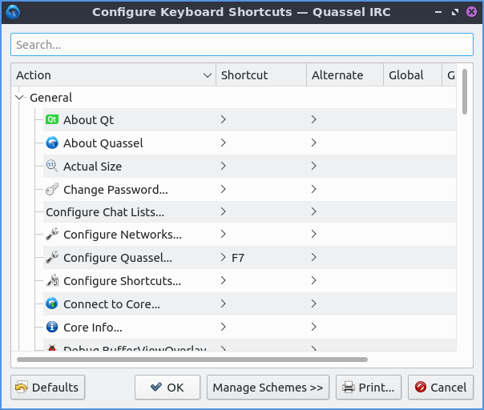Version¶
Denios-OS ships with version 1:0.13.1 of Quassel IRC.
How to Launch¶
To launch Quassel from the menu go to or type
quassel
in the terminal. The icon for Quassel looks like a blue circle with a white crescent on it.